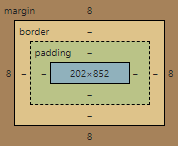

padding은 내용물의 크기를 임의적으로 변경하는 요소라고 볼 수 있다.
border는 내용물의 경계선을 뜻 하는데, 별도의 설정이 없으면 눈으로 보이지 않는다.
하지만, 설정할 경우 경계선이 보이며 그 두께 또한 설정할 수 있다.
margin은 내용물 바깥의 여백으로 이 또한 설정하여 여백을 줄 수 있다.
또한 display의 타입에는 none,inline,block이 있는데, none은 아무것도 보이지 않도록
표시하며, inline은 내용물만을 차지하게끔 보여준다. block은 내용물이 height만큼 한 화면을
가득 채우게 표시하기 때문에 title같은 부분에 어울린다.